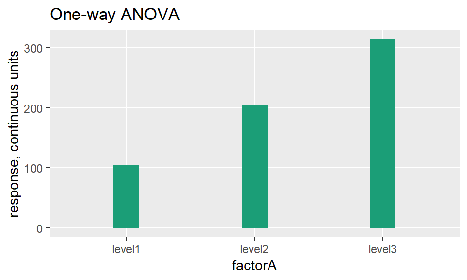
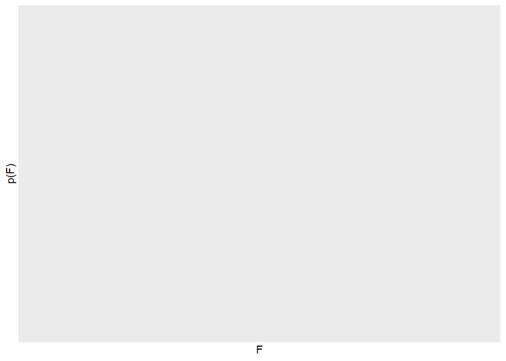

Chapter 21 Statistical design of t-tests
library(datapasta)
library(tidyverse)21.1 About this chapter
This chapter walks through a statistical design for three different types of t-test experiments; the one-sample, the unpaired and the paired t-tests.
Each of these examples use Monte Carlo simulation to assess experimental power at given sample and effect sizes, so you’d know many replicates are needed for a real life experiment.
For preliminary data, these all use information in a mouse diabetes study conducted by the Jackson Labs. This is done to illustrate how existing data can be used to refine predictions about the values we might expect in our own experiment.
In a single cycle of a Monte Carlo t-test simulation, a random distribution function is used to simulate a random sample. This mimics how the values for replicates might be generated in a real life experiment. The key distinction between real life and simulated samples is that we know the true parameters of the sampled population for the latter…because we code them in!
In these t-test cases, we’ll use the rnorm function to generate sample replicates. That’s because, ideally, t-tests are only used on dependent variables that are continuous and normally distributed. In this case, we’ll be simulating experiments that involve measuring glucose concentration, which is a continuous, normally distributed variable.
Having a simulated sample of a proper sample size, a t-test is next configured to test that sample, and then the p-value for it is collected. A p-value less than 0.05 would be counted as a “hit”.
A cycle of random sampling, t-testing, and p-value evaluation is repeated anywhere from 100 to 10000 times, depending upon how accurate you’d like to be. The fraction of ‘hits’ relative to the number of simulations is the power of the test. The higher the number of simulations, the more accurate the Monte Carlo in terms of predicting “hits” and power.
If the result is not an acceptable power, change the sample size n in the rnorm function until a Monte Carlo simulation run gives you an acceptable fraction of ‘hits’. There’s your sample size! Furthermore, any other assumptions or conditions can be changed, too. Need to re-evaluate the predicted standard deviation? Change it! Will the effect size be larger or smaller than you think? Simulate that! Want to compare a one-tailed to a two-tailed hypothesis? Switch it up!
The time to do p-hacking and HARKing is during a Monte Carlo, before running the real life experiment.
21.1.1 Scenario
Let’s imagine we have developed a new drug we hope will be useful for treating type II diabetes. Our role is to generate pre-clinical data in support of an FDA application.
The planning is based on some mouse phenome data in a diet-induced obesity study in a mouse strain, which is a common model for type II diabetes.
On the basis of expertise in the field, we make the judgment that a 50% reduction in blood glucose caused by the drug in this diet-induced obesity model would be a scientifically meaningful outcome. We need to design an experiment capable of detecting that 50% effect size.
We’ve already compiled the phenome data into summary format. We’ll use that to guide our estimates in these Monte Carlo. These data show that under diabetogenic conditions the animals have an average blood glucose of 368 and SD = 119 (mg glucose/dl).
Since this is an exercise in prediction and estimation, we’ll round those values to 370 and 120, if only to make the point that highly precise numbers misses the point of what we’re doing here.
A 50% reduction would yield a target value of about 185 mg/dl.
Finally, we’d like to run the real life experiments at 90% power. Why? Let’s imagine that these are a pretty important test: a “go” vs “no go” inflection point for a novel drug candidate. When the stakes are high so too should be the power of the test.
21.2 One sample t-test Monte Carlo
In this single arm design, all C57Bl/6J mice are enrolled in an diabetogenic protocol would receive the drug treatment. Blood glucose levels are taken at the end of a proscribed period.
The statistical test evaluates the null hypothesis, that mean blood glucose with drug treatment does not differ from the mean blood glucose that would be expected in animals that undergo the diabetogenic protocol.
There is no formal placebo control group.
Step 1: Enter mean and sd parameter estimates for the expected effect of the new drug. The sd estimate is a judgment call to think through and to model out. The entry below is conservative. It assumes the drug-treated group has the same sd as an untreated group. The Jaxwest7 data suggest a lower sd might happen with drug (the sd was 80 for the rosiglitazone group).
Also enter an estimate for the theoretical mean of the population it will be evaluated against. Finally, enter a value for the sample size of the drug-treated group.
meanDrug <- 185
sdDrug <- 120
muCon <- 370
nDrug <- 5Step 2: Declare relevant arguments for the t-test function:
alt ="two.sided"
pairing = FALSE
var = FALSE
alpha=0.05Step 3: Declare the number of simulations for the experiment and set up an empty vector to collect p-values generated by the function.
nSims <- 1000
p <- c()Step 4: Run the simulation function. Notice how with each loop it simulates a new random sample then runs a on-sample t-test on that sample, then stores the p-value in a vector that grows with each loop.
for(i in 1:nSims){
x<-rnorm(n = nDrug,
mean = meanDrug,
sd = sdDrug)
z<-t.test(x,
alternative = alt,
paired = pairing,
mu=muCon,
var.equal = var,
conf.level = 1-alpha)
p[i]<-z$p.value #get the p-value and store it
}Step 5: Calculate and show “hits” and power. Remember, a “hit” is a simulation with a p-value < 0.05. Power is the fraction of all simulations that meet this hit critria.
# the output
hits <- length(which(p < alpha)); hits## [1] 748power <- hits/nSims; power## [1] 0.748Step 6: Visualize the p-value output with a histogram. Because it’s pretty.
#now plot the histogram
ggplot(data.frame(p))+
geom_histogram(aes(p),
color="#f2a900",
fill="#012169",
bins=20)
Next steps: The returned power for the estimates above is about 75%. That’s a bit lower than a power of 90%, which we’d like here. Change the value of the nDrug term to a higher sample size, before re-running the simulation loops, until a power of ~90% is achieved. You can also change the estimate for sdDrug, too. How does lowering that influence sample size for 90% power?
Why 90%? That’s both a scientific and strategic call. In this instance a positive result will have important implications for committing further to a costly drug development process. For that reason, the study should be run at a higher power than what might be chosen for a test that is more exploratory in nature.
21.3 Unpaired t-test Monte Carlo
This is an alternative experimental design to the one above. A group is used to directly measure glucose concentration in placebo control for comparison to the drug effect, rather than assume what the glucose concentration would be in the placebo control
This design therefore involves two groups of animals. All animals would be subjected to the diabetes-inducing diet. In the control arm, the group would receive a placebo. In the experimental arm, the group would receive the new drug. Each animal would be assumed as statistically independent of every other animal.
The objective is to test the null hypothesis that the means of the blood glucose concentrations do not differ between the two groups.
Step 1: Let’s call the “A” group the placebo, and the “B” group the drug treated. We’ll use standard deviation and the mean estimates for blood glucose levels as described above. We’ll design for equal sample sizes, though this test can tolerate differences.
#Sampled population paramemters
# sample A placebo
meanA <- 380
sdA <- 120
nA <- 5
# sample B new drug
meanB <- 190
sdB <- 120
nB <- 5Step 2: Set the t-test function arguments as initializers, rather than down in the loop function, so they are easy to read and to modify.
#t-test function arguments
alt<- "two.sided"
pairing <- FALSE
var <- TRUE
alpha <- 0.05Step 3: Declare the number of simulations. The larger the number of simulations, the more accurate will be the power calculation. Also set up an empty vector for the following function to fill as it cycles through simulations and generates p-values.
nSims <- 10000 #number of simulated experiments
p <- c()Step 4: Run the simulation function.
# the monte carlo function
for(i in 1:nSims){ #for each simulated experiment
x<-rnorm(n = nA, mean = meanA, sd = sdA) #produce n simulated participants
#with mean and SD
y<-rnorm(n = nB, mean = meanB, sd = sdB) #produce n simulated participants
#with mean and SD
z<-t.test(x,y,
alternative = alt,
paired = pairing,
var.equal = var,
conf.level = 1-alpha) #perform the t-test
p[i]<-z$p.value #get the p-value and store it
}Step 5: Print out the power, which is the number of “significant” results divided by the total number of simulations.
# the output
hits <- length(which(p < alpha)); hits## [1] 5973power <- hits/nSims; power## [1] 0.5973Step 6: Plot out the distribution of p-values.
#now plot the histogram
ggplot(data.frame(p))+
geom_histogram(aes(p),
color="#f2a900",
fill="#012169",
bins=20)Next steps: This configuration with a sample size of 5 in each group is a bit underpowered. Adjust these sample sizes to dervied a power of about 90%. Also experiment with adjusting other features of the test. What happens if the SD for the drug-treated group is lower? What about a one-tailed hypothesis instead of a two-sided? Monte Carlo is the time for p-hacking and harking.
21.4 Paired t-test Monte Carlo
Another way to test whether the new drug can reduce blood sugar concentrations is by using a paired design. Paired designs offer some level of control over random variability by accounting for some of it to the variation within subjects.
For example, individuals may differ wildly in their absolute blood glucose concentrations, but the proportional change due to drug from subject to another will be fairly consistent.
The paired t-test challenges the null hypothesis that the average change in blood glucose caused by the drug is zero.
Step 1: When simulating data for a paired design it is important to account for the expected correlation between variables. That’s best accomplished on the basis of some data.
We can use the serial glucose measurements from individual subjects in the Jaxwest7 data set to extract this information.
There are two daily blood glucose measurements taken on days 1, 3, 5, 7, 9, 11 and 12 of a study, from each of 16 different subjects. We can think of each blood collection as a variable, for which 16 independent replicate measurements are taken.
Across the blood collections we expect to see high correlation within the replicates. In other words, animals with high values should be consistently high across the study period, and animals with low values should be consistently low across the same time frame.
#Copying cells F14:S32 of the Jaxwest7 table (the value at F21 was imputed as the average of its row before pasting) using the datapasta package.
bloodGlucose <- data.frame(
day01 = c(136L, 345L, 190L, 434L, 424L, 170L, 487L, 218L, 179L, 260L,
115L, 526L, 325L, 329L, 230L, 204L),
day01 = c(270L, 518L, 301L, 504L, 486L, 208L, 449L, 273L, 184L, 381L,
191L, 517L, 252L, 296L, 414L, 120L),
day03 = c(162L, 429L, 311L, 453L, 447L, 134L, 525L, 254L, 124L, 174L,
132L, 465L, 203L, 212L, 408L, 138L),
day03 = c(165L, 413L, 361L, 392L, 417L, 129L, 419L, 265L, 107L, 140L,
132L, 394L, 158L, 159L, 179L, 139L),
day05 = c(192L, 456L, 398L, 350L, 496L, 147L, 437L, 338L, 108L, 132L,
169L, 310L, 135L, 156L, 432L, 157L),
day05 = c(397L, 487L, 465L, 400L, 484L, 141L, 476L, 386L, 149L, 138L,
158L, 269L, 162L, 200L, 288L, 122L),
day07 = c(172L, 468L, 388L, 458L, 468L, 241L, 525L, 287L, 142L, 164L,
129L, 213L, 164L, 139L, 163L, 163L),
day07 = c(148L, 419L, 392L, 387L, 423L, 128L, 499L, 236L, 143L, 137L,
120L, 185L, 181L, 143L, 240L, 168L),
day09 = c(291L, 507L, 453L, 342L, 472L, 162L, 516L, 347L, 112L, 122L,
122L, 145L, 150L, 164L, 185L, 164L),
day09 = c(239L, 559L, 421L, 368L, 507L, 163L, 485L, 235L, 233L, 140L,
157L, 201L, 177L, 150L, 208L, 128L),
day11 = c(192L, 420L, 355L, 355L, 458L, 222L, 472L, 432L, 113L, 102L,
94L, 131L, 162L, 119L, 138L, 129L),
day11 = c(172L, 415L, 381L, 429L, 456L, 438L, 535L, 450L, 137L, 174L,
141L, 258L, 192L, 193L, 208L, 218L),
day12 = c(235L, 511L, 394L, 373L, 519L, 307L, 500L, 509L, 106L, 120L,
120L, 114L, 170L, 148L, 153L, 135L),
day12 = c(153L, 464L, 444L, 501L, 570L, 252L, 497L, 326L, 150L, 135L,
166L, 160L, 162L, 188L, 140L, 182L)
)We calculate the correlation between any two daily sets of values. In fact, we can calculate the correlation between all possible pairs of daily values. This leaves us with a large number of unique correlation coefficients. We then derive from these an overall average correlation coefficient for use in Monte Carlo function.
#create a full correlation matrix
cormat <- cor(bloodGlucose)
#remove lower half of matrix
cormat[lower.tri(cormat)] <- NA
#remove matrix diagonal
cormat[cormat==1.0000000] <- NAHow correlated are the glucose levels in the Jaxwest7 data set?
#calculate the average correlation coefficient among all the correlations in the Jaxwest7 glucose level data set
mean(cormat, na.rm=T)## [1] 0.7665732#phew!What does this value mean?
First, it can be show that when the value of the correlation coefficient between the variables \(X,Y\) is \(r\), then the relationship between each pair of \(x_i, y_i\) values in the set is \[y_i=x_i\times r+y_i\sqrt{1-r^2}\]
Intuitively, this should make sense. You can see, when \(r=0\), then \(y_i=y_i\). When \(r=1\), then, \(y_i=x_i\))
So the correlation coefficeint from the Jaxwest7 data set means that within each subject in our experiment the expected correlation between pre-drug glucose concentrations and post-drug glucose concentrations is 0.7666.
Step 2: Initialize the Monte Carlo with estimates for the measurement values. We start with the mean and sd values for the pre-drug blood glucose measurements. Their estimates are derived from the placebo group in the Jaxwest7 data set, rounded to 380 and 120, respectively.
A scientifically-meaningful effect of the drug would be a 50% reduction in glucose. We want to set up an experiment that can detect that effect.
The expected correlation between pairs of measures is 0.7666, rounded to 0.75.
#Sampled population paramemters
# pre-drug measurements
mean1 <- 185
sd1 <- 120
# post-drug response
mean2 <- 380
sd2 <- 120
r <- 0.75
k <- sqrt(1-r^2)
# number of paired measures
pairs <- 3Step 3: This step sets the arguments in the t-test function. Even though we predict a reduction in glucose, we’ll test this as a two-tailed hypothesis. It’s a little more stringent.
The t.test function needs to be set for paired=TRUE so that it runs the appropriate test.
#t-test function arguments
alt<- "two.sided"
pairing <- TRUE
var <- TRUE
alpha <- 0.05Step 4: Declare the number of simulations. The larger the number of simulations, the more accurate will be the power calculation.
Also set up an empty vector to fill with p-values, as they are generated each cycle.
nSims <- 10000 #number of simulated experiments
p <- c()Step 5: Re-simulate and re-run the t-test nSims times.
The y1 and y2 vectors are each a set of randomly generated values for the post- and pre-drug measurements, respectively. Both measures need to be simulated as random variables. But the y2 vector needs to be corrected for its correlation with y1.
NOTE The correlation only works by always simulating the lower of two mean values as y1.
for(i in 1:nSims){ #for each simulated experiment
y1<-rnorm(n = pairs, mean = mean1, sd = sd1) #produce n simulated participants
#with mean and SD
y2<-rnorm(n = pairs, mean = mean2, sd = sd2) #produce n simulated participants
#with mean and SD
#correlated
y2 <- r*y1+k*y2
z<-t.test(y1,y2,
alternative=alt,
paired=pairing,
var.equal=var,
conf.level=1-alpha) #perform the t-test
p[i]<-z$p.value #get the p-value and store it
}Step 6: Calculate power as the fraction of p-values less than 0.05.
# the output
hits <- length(which(p < alpha)); hits## [1] 5937power <- hits/nSims; power## [1] 0.5937Step 7: Visualize the p-value distribution.
#now plot the histogram
ggplot(data.frame(p))+
geom_histogram(aes(p),
color="#f2a900",
fill="#012169",
bins=20)
library(pwr)
pwr.t.test(n=6, d=1.58, sig.level=0.05, type="paired", alternative="two.sided")##
## Paired t test power calculation
##
## n = 6
## d = 1.58
## sig.level = 0.05
## power = 0.867253
## alternative = two.sided
##
## NOTE: n is number of *pairs*pwr.t.test(n=8, d=1.58, sig.level=0.05, type="two.sample", alternative="two.sided")##
## Two-sample t test power calculation
##
## n = 8
## d = 1.58
## sig.level = 0.05
## power = 0.8358049
## alternative = two.sided
##
## NOTE: n is number in *each* group